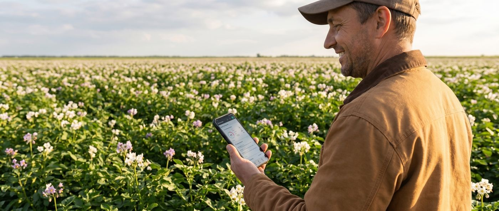

Manage every farm from a single dashboard
CropX gives enterprise teams unified visibility across hundreds of properties — soil health, irrigation activity, weather forecasts, and grower compliance, all in one place.

Scale your advisory practice without scaling your team
Service providers use CropX to manage 10× more grower accounts with the same headcount — automated alerts, customisable client dashboards, and white-labelled reporting built in.

Decisions you can trust, straight from the soil
On-farm growers use CropX to know exactly when to irrigate, fertilise, and treat — based on real conditions in real time, not estimates from charts and almanacs.

Plays well with the equipment you already own
From soil sensors to weather stations to irrigation controllers, CropX integrates with the tools you've already invested in. We connect the dots so your data lives in one place.